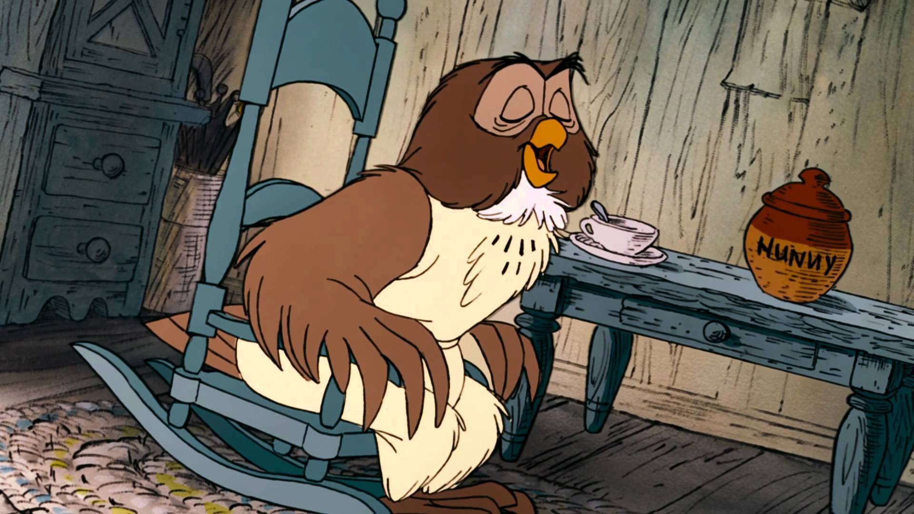
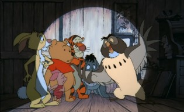
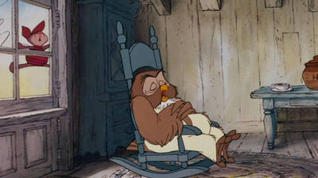
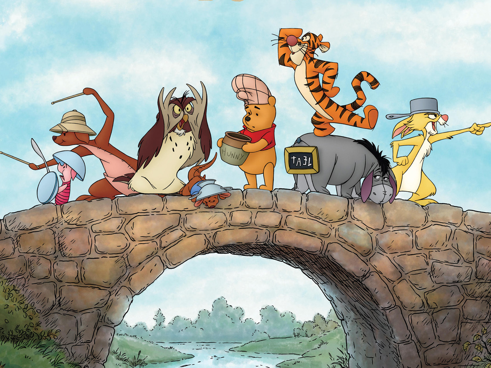
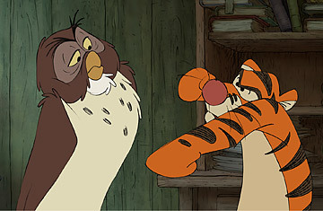

He is the wisest amongst all the animals living in the 100 Acre Wood. He is a large owl and stands at nearly 28 inches in length and when he spreads his wings they are 42 inches wide. Owl, like Rabbit wasn’t an original toy belonging to Christopher Robin Milne. Along with Rabbit he is considered to be an animal with brains. His intelligence is often called upon to aid a certain bear of very little brain. He is always forthcoming in offering his advice, opinions and anecdotes irrespective of others wanting it. He also loves telling stories related to his relatives. His original residence is called The Chestnuts but when a storm blows away his house and thereafter he makes Piglet’s residence his new residence. His residence has amenities like a pull- bell and a door knocker. Owl is capable of writing and some illustrations show him holding a pen in his talons.
    